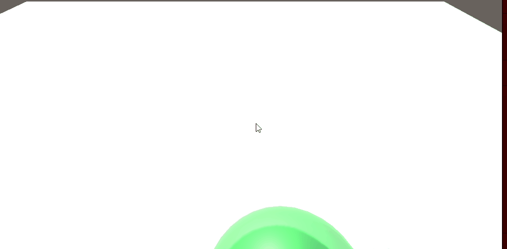
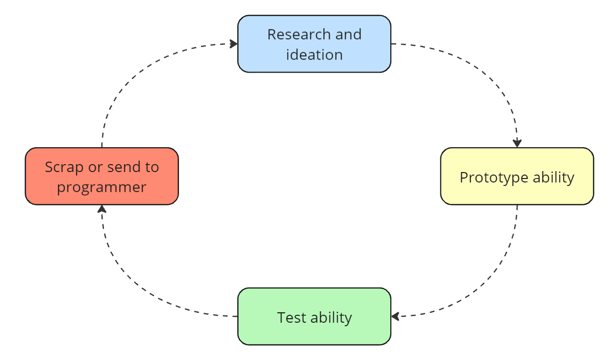

Survive the creation of the universe as the first
hydrogen atom called Hydro.
Battle the endless stream of Void Creatures with
the one goal of making it to the creation.
Project Details
Plattform:
Genre:
Engine:
Development time:
Restrictions:
PC
Unity
Rouge-like
3 weeks
Xbox Adaptive Controller
Roles and Responsibility
Technical Gameplay Design
Rapid Prototyping,
Script optimizing,
Ideating features,
Implementing features
First Day Prototype
I made a quick game prototype to get everyone on the same page
Game Prototype
I prototyped the full game on the first day including movement,
simple enemies and two abilities to get a feel if the game was fun.
This helped the team understand the vision of the game and helped me
start prototyping other things without having to wait for programmers.

Technical Gameplay Design
Worked on all the abilites for the game
Workflow
The workflow I used during this project.
It helped me make more abilites during a shorter time period.

Abilities
We had a goal to get 5 working abilities in the game before the deadline.
The goal of the abilities was to make the player feel powerful
and for them to compliment the constant movement. I designed and scripted them.
Takeaways
What I learned, liked and disliked
Collaborating with programmers to optimize and make my code better was super fun!
This was the first time I utilized my quick prototyping which helped the team and made me find what I like!